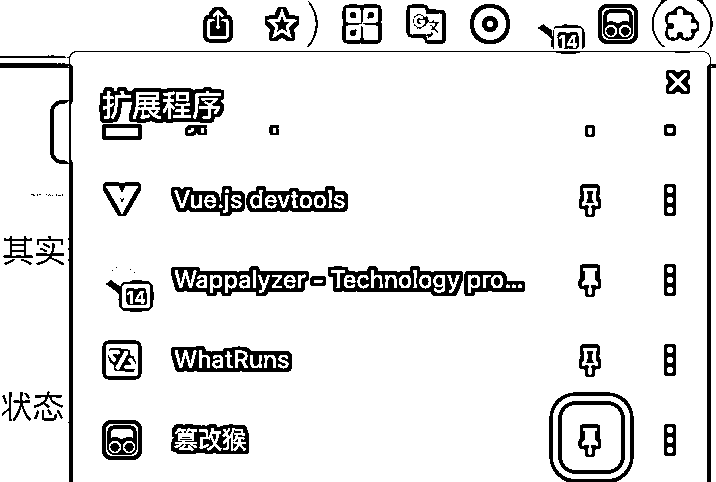
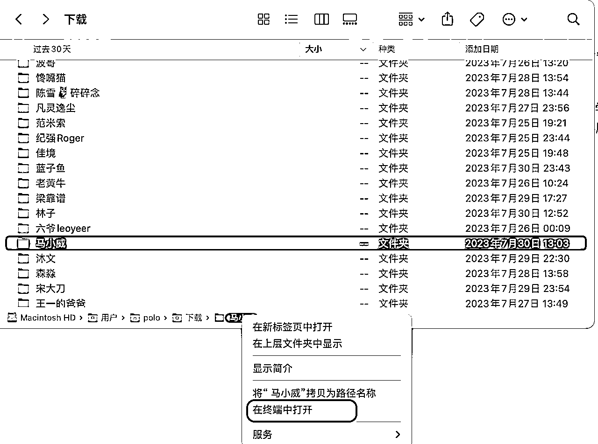

来源：https://jw8m9o7piwx.feishu.cn/docx/HCOzdkh4aoS1lMxNuCWcAs6vnlC
一句话总结：通过 AI 分析龙珠榜排名前100的高手写的文章，总结他们擅长的领域。结合自我介绍，提炼出个人的关键词。成果： ，本文简单对这个过程进行复盘。
全文近2500字，阅读需要5分钟。
目录包括五个部分：
1. 为什么做这件事？
2. 需要做什么？
3. 怎么做？
4. 通过自我介绍，进一步完善
5. 收获与展望
算是两件事带来的灵感：
其一是看了生财里关于“搭建兵器库”相关的文章，这是个非常好的理念。看了精华帖和风向标后，可以内化成自己的知识，就能在需要时拿出来用。
而人脉库也是一个很重要的资源，有的觉得不错的人如果不想马上加微信链接，可以先加到自己的人脉库里，下一次遇到可以快速搜索出来进行更深的了解。
其二是 AI 数字人和知识库的概念很火，我想到可以通过分析高手写过的文章去分析擅长的领域，感受一下到底效果如何。另外，也可以顺便学学通过油猴脚本实现一部分自动化的流程。
通过 AI 分析高手写的文章，总结高手擅长的领域以及关键词。后面发现在手机端的生财索引站可以看到高手的自我介绍，所以结合了 AI 分析和自我介绍总结关键词。
最后总结的部分成果截图如下：
经过尝试和优化后，我提炼了如上图所示的分析高手文章的流程图，需要把高手写的文章保存到文件，然后丢给 AI 分析结论。
接下来逐个讲解每个步骤。
如上图所示，是电脑端 生财索引站 中涛哥的个人页，可以通过查榜单或者搜索到达。
能上龙珠榜的大佬一般都写精华帖，所以以分析精华帖为主，精华帖少的，可以分析点赞高的帖子。所以要做的事情就变成点击精华主题后，点击每篇文章把文字内容下载到本地保存成txt文件。
如果靠完全手动搞会比较麻烦，需要花费大量时间。这时候就会想到通过运行脚本自动化处理。其实现在有了 gpt 后，即使没有特别多的编程经验，写一个简单的脚本也不难。
以 chrome 浏览器为例，首先我们需要用到 篡改猴（油猴）这个浏览器插件，添加完成后把它置为启用的状态，然后固定在浏览器插件栏，方便使用。

我们可以写最通用的 JS 脚本去模拟点击操作，点击精华主题，点击打开每一篇文章。
脚本需要与网页的链接配对，所以这里分为两个脚本：
一个脚本用在索引站个人详情页：https://search01.shengcaiyoushu.com/personal*，执行的动作是点击精华主题，并逐个点击打开每篇文章。
第二个脚本用在文章详情页：https://wx.zsxq.com/dweb2/index/topic_detail/*，而文章页中可能又存在 https://articles.zsxq.com/*的文章链接和飞书链接，所以这里会略微复杂，需要判断文章中是否存在实际的文章链接，如果存在，则不执行下载保存到本地文件的操作，而是打开相应链接后执行；如果不存在则直接下载文件到本地。
具体怎么写脚本呢？
如果没有编程基础的话可以使用 gpt 帮忙，描述尽量清晰具体、分步回答，比如：你是一个资深的前端开发专家，请帮我写一个油猴脚本，开发一个点击文章列表打开文章详情页后把文章下载保存到本地的脚本。
如果没有编程基础，过程中难免会遇到卡壳。有不懂的，直接复制粘贴回去提问，一步一步搞懂，是一个很好的学习过程。而笔者有一定的开发经验，所以用 gpt 辅助开发会比较快，因为写脚本不是本文的重点，所以技术细节不展开说明。
具体实现的效果如下视频，可以看到，实现了自动逐个打开精华文章并下载。
如果下载了多个 txt 文件，我希望整合成一个文件，这样既方便上传，也方便 AI 输出内容后进行校对。
对于这种需求使用命令行是很方便的，以我的 mac 系统为例：

如图所示，把文章放到单独的文件夹后点击在终端中打开。输入下面的命令并回车：
cat *.txt > merge.txt
这样就在文件夹中生成了一个合并的 merge.txt 文件。
有两款选定的网页，一个是 Chato, 基于学习素材定制 AI 机器人。第二个是 Claude2, 类似 ChatGPT, 可以在对话框直接上传最多5个，每个10MB 的文件训练。
一开始用的 Chato, 优点是可以上传比较大的数据用于训练，单次可以上传20个文件，每个文件 30MB。并且可以直接输入文本或者网页抓取。
相比较，缺点是训练比较慢，训练页面和对话页面需要切换，训练后回答的质量不是特别满意。
所以，经过对比后，后面主要使用 Claude 进行输出，优点是“上传-提问-回答”的流程比较丝滑，速度快，且回答的质量比较满意。
上传文件后，输入一段提示词获取老师擅长的领域，我输入的提示词是：
上传的文本是xx老师写的文章，请根据文章总结概括他的学历背景、工作履历、擅长的领域，擅长在什么平台做什么事，比如：擅长在抖音、微信平台建立ip。不超过100字。
只能基于给定文本内容回答，不能做额外假设，不要随意推断，请百分百根据文本内容真实作答。
效果如下图：
有时候 AI 还是会胡乱回答或者回答质量不高，所以我会把回答的关键词在文本里搜索一下，看是否属实。如果回答的质量不高我会根据理解进行修正或者进一步问答。
一开始遇到 AI 回答不准的情况会尝试搜索有没有高手的自我介绍，把自我介绍喂给 AI 再回答一次会比较准确。
后来发现，其实通过生财索引站的手机端可以直接查看自我介绍，也就是我们加入生财时鱼丸叫我们提交的自我介绍。自我介绍页可以通过榜单或者搜索到达。
在电脑端也可以打开手机端的页面，通过在开发者工具中输入相应的 JS 代码就可以直接获取到个人简介的内容。
通过自我介绍和 AI 分析的结果总结了五个左右的关键词，例子如下：
对于我来说，我成功的把头脑里的几个点串联了起来：AI 训练、建立个人兵器库、油猴脚本、初步了解生财龙珠高手。
最大的收获是过程本身，在“遇到问题-解决问题”的循环中得到锻炼。遇到感兴趣的人和文章，也会顺手关注和收藏，也会发现一些有趣的点：有一些生财高手比较久没有活跃了，他们现在对什么感兴趣？怎样再次激活这部分高手资源？
虽然没有直接赚到钱，但做成一件事，给自己带来很多正反馈，也可以向外传递价值。当有足够多的正反馈时，赚钱是自然而然的事情，是不断输出价值带来的结果。
如果文章对你有所帮助或者遇到问题，欢迎在评论区交流！